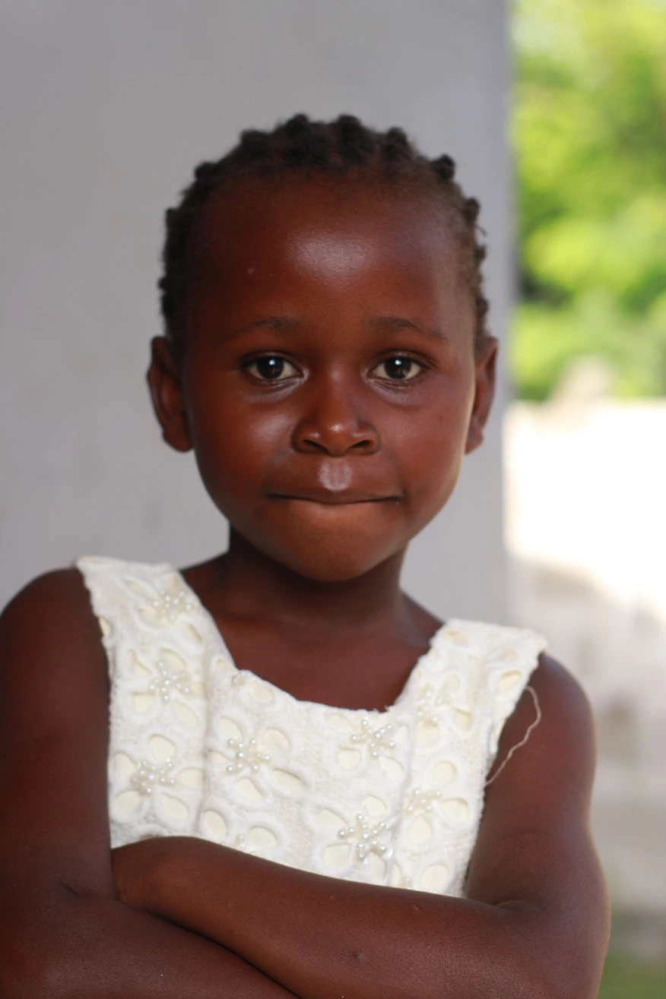
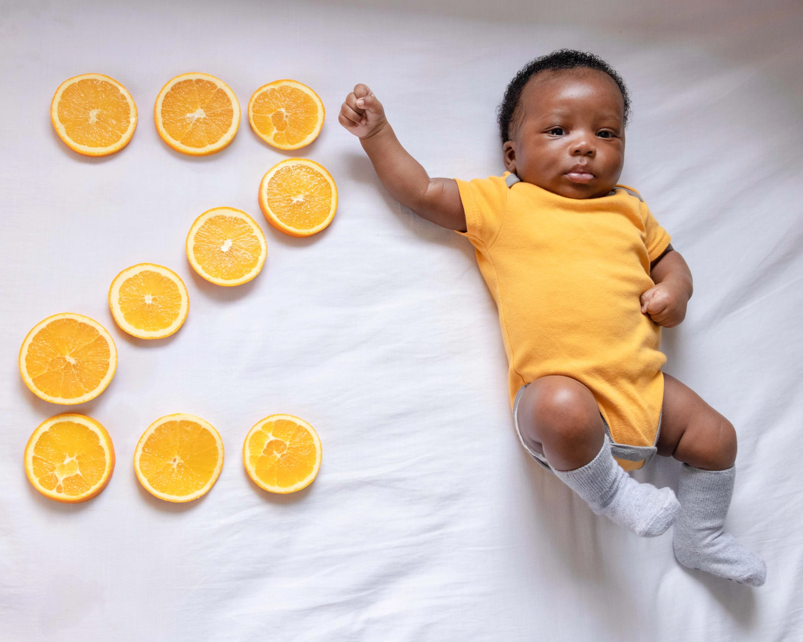
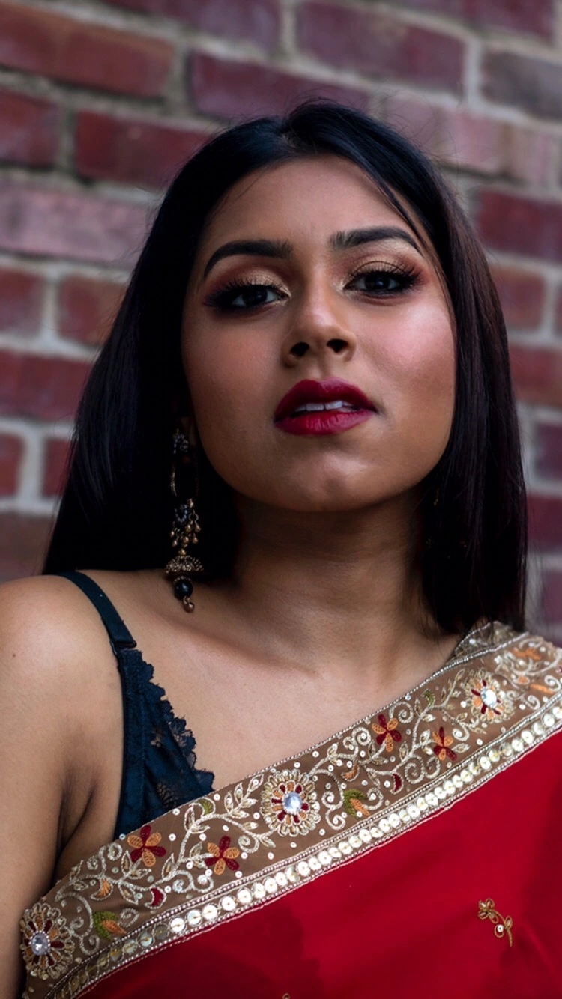

Home
Hi, welcome to my photography page. I photograph graduation, engagement photoshoots and take portraits. But I also photograph my family a lot during events and gatherings. Here are a few of my photo galaries.


